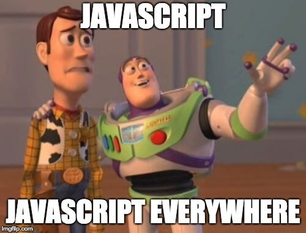
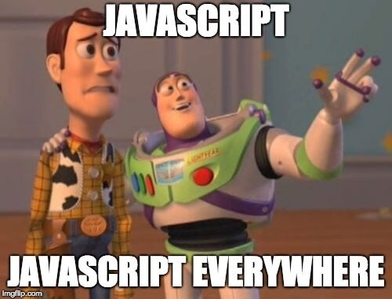

Om JavaScript
JavaScript är ett av de mest populära programeringsspråken i världen. Det används för att göra webbsidor interaktiva och dynamiska. Med det här menar man att en besökare kan göra mer på webbsidan än att läsa dess innehåll. Exempel på JS finns överallt, och det finns många funktioner. Till exmpel på en hemsida som Facebook där man kan ladda upp eller ta bort bilder, fylla i formulär etc.
Vad är ett programmeringsspråk?
Ett programmeringsspråk är ett formellt språk som används för att ge en dator instruktioner så att den kan utföra olika uppgifter. Det gör man i samband med utveckling av exempelvis olika webbsidor, spel eller applikationer. Det finns två olika format för programmering. Det ena kallas för "maskinkod" som består av endast nollor och ettor och kan genomföras direkt i datorn. Det andra formatet som kallas "källkod" är mycket enklare att läsa och är det som används med olika programmeringsspråk, som exempelvis JavaScript. För att det ska fungera väl är det viktigt att man ger tydliga och objektiva instruktioner och att man följer rätt syntax så att koden kan genomföras utan problem. Man brukar dela in språken i två olika kategorier - "lågnivåspråk" och "högnivåspråk". Lågnivåspråk (ex. assembler) är väldigt nära datorns språk och är svårare att skriva och läsa, därför använder man "högnivåspråk" som är enklare att använda. På W3Schools kan du läsa mer om olika programmeringsspråk.
Vad är en algoritm?
När vi ger en dator instruktioner kommer den att utföra dem så som vi har skrivit dem, men en dator förstår inte språk på samma sätt en människa förstår det. Därför är det viktigt att man ger datorn tydliga, objektiva instruktioner som förklarar exakt hur och i vilken ordning det ska genomföras. Det här gör man genom algoritmer, vilket helt enkelt är en beskrivning på en problemlösning. En algoritm är abstrakt och behöver inte skrivas i kod. I stället kan man ge datorn instruktioner via text eller flödesdiagram. Ett exempel på en algoritm kan vara ett matrecept, där det finns tydliga instruktioner och i vilken ordning de ska genomföras. Hur komplex en algoritm är beror på problemet, men huvudsyftet är att förenkla problemet så mycket som möjligt och hitta en effektiv lösning. Det är något vi gör vardagligen vilket gör det till en fundamental del av mänskligt tänkande. Du kan läsa mer om algoritmer på Programmera Python.
JavaScript-bibliotek
Som jag redan har nämnt, var ett av syftena till den här webbsidan att använda JavaScript. Koden som körs på sidan kommer från ett bibliotek, och kan bara kopieras och klistras in i en fil, och sedan länkas till en HTML-fil för att köras. Ett JavaScript-bibliotek är alltså ett bibliotek med fördefinierade funktioner som programmerare kan använda, vilket underlättar mycket och sparar tid för den som programmerar. Det finns flera olika bibliotek och bland dem är "JQuery" ett av de mest populära, och är även det som används på den här webbsidan. Förutom att JS-bibliotek sparar tid så ökar det kodens läsbarhet. Det blir en tydligare struktur och den som programmerar behöver inte upprepa koder, vilket minskar risken för fel. Eftersom dessa bibliotek används hela tiden är de alltid uppdaterade och potentiella buggar fixas av användarna vilket gör koderna extremt användbara då de ökar prestandan och förbättrar användarupplevelsen. Läs mer om JavaScript-bibliotek på Code Institute.
Bilder

 

Faktaruta
- Utgivningsår: JavaScript gavs ut 1995.
- Skapare: Språket skapades av Brendan Eich.
- Senaste version: Den senaste versionen av JavaScript är ECMAScript 2023.
- Filändelse: JavaScripts filändelse är ".js".